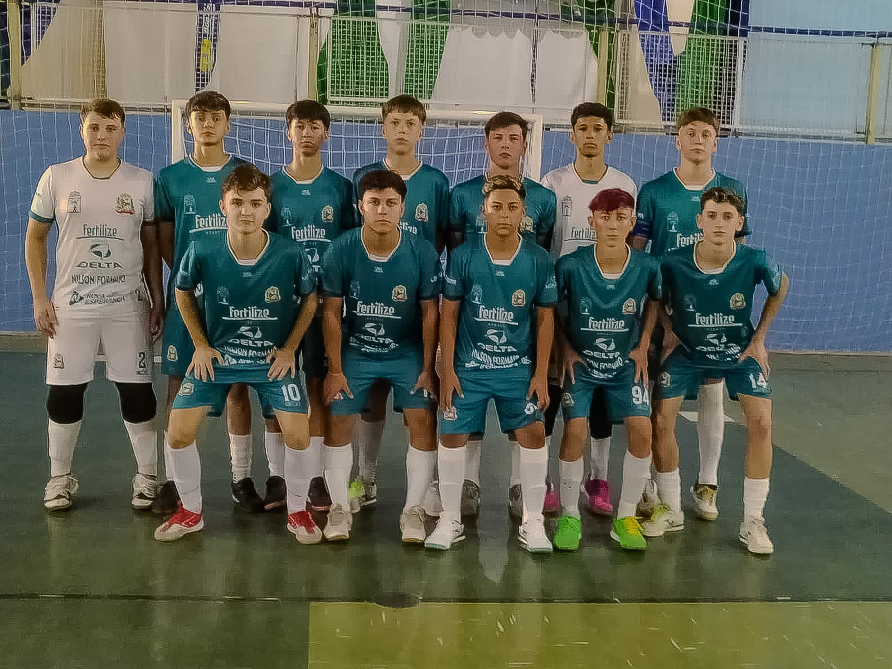

Colégio CENE se destaca nos Jogos Escolares 2025 em Boa Esperança do Iguaçu
Da esquerda para direita: Kauã, João Vitor, Murilo, Alisson, Luiz, Maicon, João S., Eduan, Emanuel, Wagner, Alexandre.
Entre os dias 2 e 7 de maio, aconteceu a 71ª edição dos Jogos Escolares de 2025, sediada em Boa Esperança do Iguaçu. O Colégio CENE participou da competição, representando nas modalidades de futsal masculino e vôlei feminino. No futsal masculino, os atletas conquistaram excelentes resultados. Na categoria B, o time ficou com o segundo lugar, enquanto na categoria A garantiu o terceiro lugar.
Já no vôlei feminino, o CENE competiu nas categorias A e B. A equipe da categoria B terminou na quarta colocação, enquanto a equipe da categoria A não conseguiu avançar para as semifinais, ficando fora da disputa pelo título.Os grandes campeões desta fase foram o time de Dois Vizinhos, que conquistou o título no vôlei feminino tanto na categoria A quanto na B, e a equipe de Nova Prata do Iguaçu, que levou o ouro no futsal masculino nas duas categorias.
As competições esportivas continuam no segundo semestre, com os jogos "Bom de Bola", que estão dedicados ao futebol de campo.
O Colégio CENE também estará presente, buscando novamente representar com garra e dedicação.